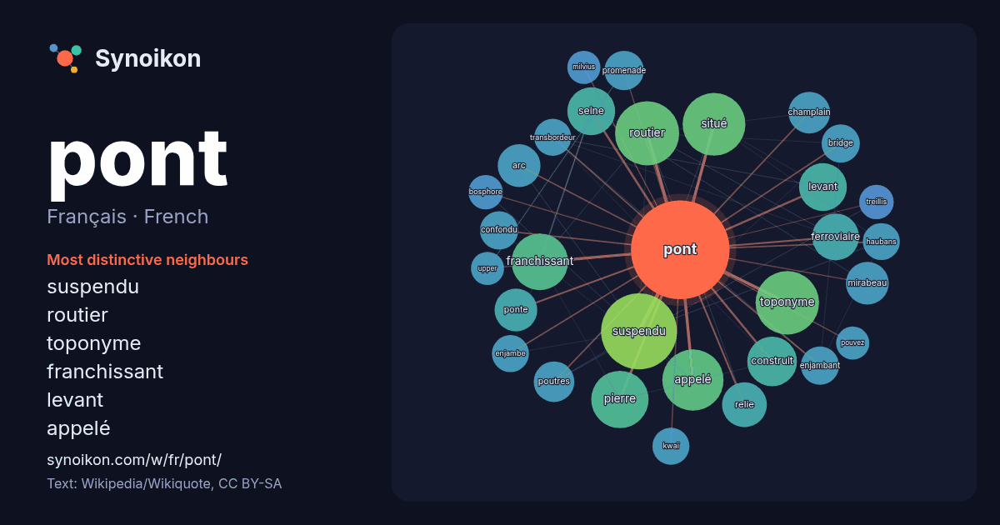

Français · French · word of the day list
pont
“bridge” · The words found around it in 1495 instances from French Wikipedia, Wikiquote.

Most distinctive neighbours
- suspendu 58×
- routier 40×
- toponyme 40×
- franchissant 35×
- levant 25×
- appelé 23×
- seine 23×
- mirabeau 21×
- ponte 20×
- champlain 20×
- relie 20×
- arc 19×
- ferroviaire 18×
- poutres 18×
- promenade 17×
- enjambant 17×
- confondu 16×
- bridge 16×
- kwaï 16×
- transbordeur 16×
× = how many times more often than in general French Wikipedia text.
Most frequent neighbours
- suspendu 63
- routier 45
- toponyme 44
- situé 43
- appelé 41
- paris 41
- pierre 36
- franchissant 35
- liste 33
- france 28
- construit 27
- ancien 25
- levant 25
- seine 25
- ville 25
- ferroviaire 24
- rivière 23
- relie 22
- arc 20
- mirabeau 20
In context
- qualité » labellisé en 2010. Pour les articles homonymes, voir Pont (homonymie). Un pont est un ouvrage d'art qui permet de franchir un obstacle naturel Wikipedia snippets · Pont
- les articles homonymes, voir Pont Neuf (homonymie). Le pont Neuf ou Pont-Neuf est, malgré son nom, actuellement le pont le plus ancien existant à Paris Wikipedia snippets · Pont Neuf
- Le pont du Gard est un pont à trois niveaux destiné au passage d'un aqueduc romain. Il est situé à Vers-Pont-du-Gard à côté de Remoulins, non loin d'Uzès Wikipedia snippets · Pont du Gard
- Pour les articles homonymes, voir Térénez. Le pont de Térénez enjambe l'Aulne entre Argol et Rosnoën sur la route départementale 791 qui relie Crozon au Wikipedia snippets · Pont de Térénez
- Pour les articles homonymes, voir Pont (toponyme) et Mousson (homonymie). Pont-à-Mousson [pɔ̃tamusɔ̃] est une commune du Nord-Est de la France, en Meurthe-et-Moselle Wikipedia snippets · Pont-à-Mousson
- les articles homonymes, voir Jacques Cartier (homonymie). Le pont Jacques-Cartier est un pont routier de type à poutres cantilever qui relie Longueuil à Wikipedia snippets · Pont Jacques-Cartier
- voir Dupont ou Dupond, Du Pont (homonymie) et Nemours (homonymie). DuPont de Nemours, aussi connue sous le nom « DuPont », est une entreprise américaine Wikipedia snippets · DuPont
- Pour le navire, voir Pont-Aven (cruise-ferry). Pour les articles homonymes, voir Pont (toponyme) et Aven (homonymie). Pont-Aven [pɔ̃tavɛn] est une commune Wikipedia snippets · Pont-Aven
More French words
- art
- automne
- carte
- chanson
- chat
- chemin
- cheval
- chien
- climat
- cloche
- cœur
- dieu
- désert
- eau
- famille
- forêt
- histoire
- hiver
- horloge
- jardin
- langue
- miel
- miroir
- monnaie
- montagne
- mort
- mère
- nature
- nourriture
- ombre
- pain
- pluie
- pouvoir
- printemps
- santé
- science
- sel
- silence
- temps
- tempête
- thé
- train
- travail
- trésor
- vie
- ville
- vérité
- étoile
- île
Precomputed on 2026-10-09 with default settings (±5 words, medium corpus). The interactive map can refresh it with live data.